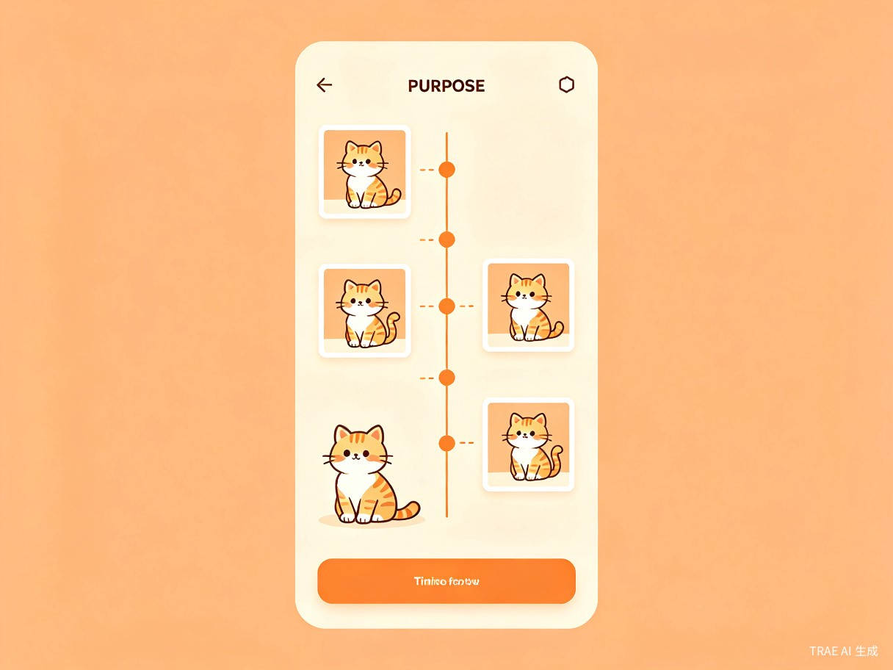
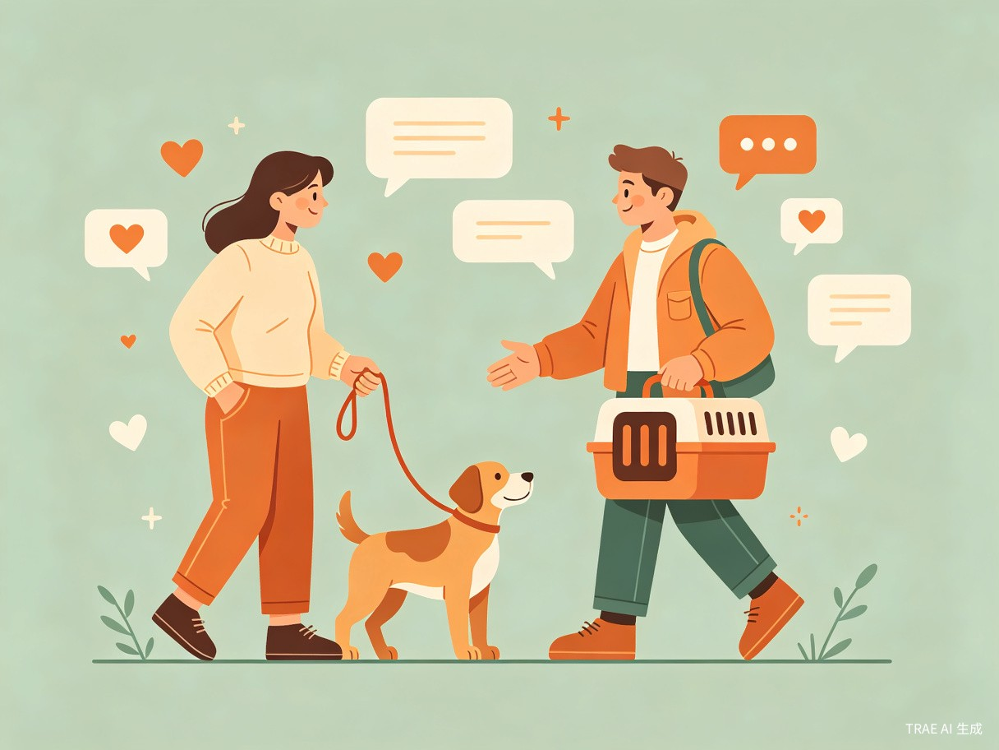
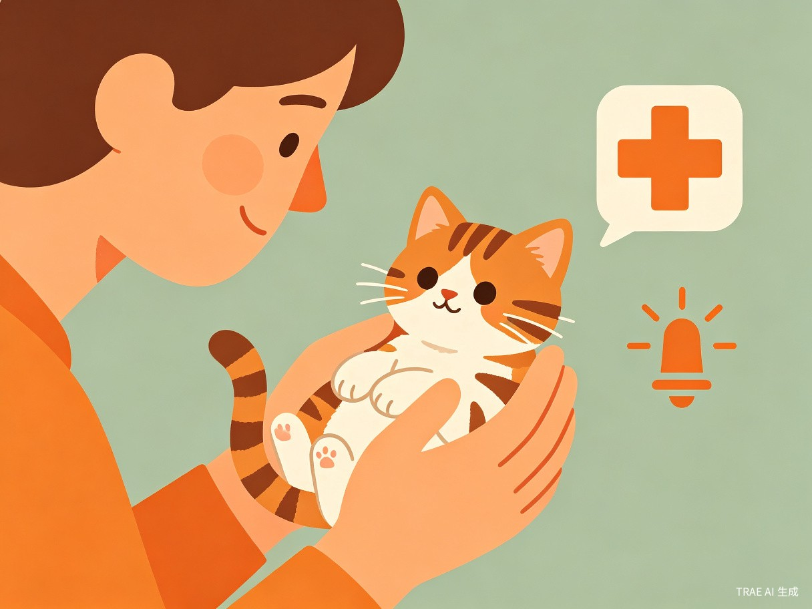

创意介绍
每只宠物都值得被记录，每个养宠人都需要被帮助
宠友圈是一个以宠物为社区节点的一站式养宠平台。每只宠物拥有独立身份主页，用户可以以宠物身份发帖——内容归属宠物而非用户。发布的每一条帖子自动沉淀为成长时间轴，里程碑（首次发帖 / 社区明星 / 人气爆棚）自动触发。
平台内置互助大厅四分区（经验交流 / 问题求助 / 流浪关爱 / 宠友互帮），支持紧急标识、回答采纳、接单互评，覆盖养宠人记录成长、互助答疑、出差寄养三大刚需场景。
🎯 想解决什么问题
① 养宠人的照片散落在朋友圈和相册里，无法按宠物维度沉淀为完整的成长记录；② 养宠遇到问题时（如猫咪换粮软便、出差没人遛狗）缺少结构化的求助渠道，现有微信群和小红书无法高效匹配「有经验的人」和「有需求的人」。
💡 为什么会想到做这个
身边养宠朋友的真实痛点——养宠三年手机里几千张照片却没有一个地方能完整看到宠物从奶猫到现在的成长故事；过年出差最头疼的是找谁帮忙喂猫，不放心陌生人又不好意思麻烦朋友。
核心功能
三大核心模块，一站式覆盖养宠刚需

📸 宠物成长时间轴
以宠物身份发帖，内容自动沉淀为成长时间线。里程碑自动触发，零数据录入即可拥有完整的宠物成长档案。

❓ 互助大厅四分区
经验交流 / 问题求助 / 流浪关爱 / 宠友互帮。结构化问答 + 紧急标识 + 回答采纳，让求助更高效。

🆘 紧急救助通道
流浪关爱分区 + 紧急置顶机制，为救助人提供高效曝光渠道，让更多流浪动物获得及时帮助。
目标用户
精准覆盖四类核心养宠人群
| 用户画像 | 特征描述 |
|---|---|
| 新手铲屎官 | 刚养宠 0-1 年，很多不懂，渴望经验交流，需要结构化指导降低养宠门槛 |
| 深度宠友 | 养宠 3 年以上，多只宠物，有记录成长和社交展示需求，愿意为社区贡献经验 |
| 出差 / 加班族 | 经常不在家但养了宠物，需要临时照看和互帮，信任成本是核心痛点 |
| 救助爱心人士 | 关注流浪动物，需要紧急求助和领养信息渠道，重视曝光效率和响应速度 |
使用场景
记录场景
每天想以宠物口吻记录日常，让成长有迹可循
求助场景
宠物出现异常（拉稀 / 厌食 / 行为问题），急需有经验宠友的建议
出差场景
出差 3 天没人遛狗喂猫，需要附近宠友临时帮忙
紧急场景
发现被遗弃奶猫，需要社区紧急曝光和救助协调
当前痛点
如果没有宠友圈，养宠人正在经历什么？
| 痛点 | 现有方案 | 缺陷 |
|---|---|---|
| 成长记录 | 发朋友圈 / 小红书 | 随算法漂走，无法按宠物维度沉淀为时间线 |
| 养宠求助 | 微信群 / 百度搜索 | 信息碎片化，回答质量参差，没有采纳机制 |
| 出差寄养 | 找朋友 / 闲鱼 | 不信任陌生人，不好意思反复麻烦朋友 |
| 流浪救助 | 发朋友圈 | 曝光范围有限，缺乏紧急置顶机制 |
"养宠三年手机里几千张照片，却没有一个地方能完整看到宠物从奶猫到现在的成长故事。" —— 身边养宠朋友的真实痛点
价值与意义
不止是一个产品，更是一种宠物友好型网络空间的探索
🐾 社会价值
降低养宠门槛
新手铲屎官可以在互助大厅快速获得有经验宠友的结构化回答，减少因「不懂怎么养」导致的弃养
流浪动物救助
流浪关爱分区 + 紧急标识 + 社区置顶机制，为救助人提供高效曝光渠道，让更多流浪动物获得及时帮助
宠物社交去中心化
以宠物而非用户为社区节点，让每只宠物拥有独立数字身份和成长档案，创造「宠物友好型」网络空间
⚡ 效率提升
-
01
一站式覆盖三大刚需
用户无需在朋友圈（记录）、微信群（求助）、闲鱼（找服务）之间跳转，一个平台完成记录 + 交流 + 互帮
-
02
零数据录入的自动成长时间轴
发帖即记录，里程碑自动计算（客户端纯计算），用户不需要额外维护任何数据
-
03
结构化互助体系
四分区 + 紧急标识 + 回答采纳 + 互帮接单，比微信群的非结构化讨论效率高一个数量级
产品定位
差异化竞争，填补市场空白
❌ 现有产品的问题
小红书 / 抖音把宠物当配图，宠物医院 App 只有单一健康管理，没有平台把「社交 + 互助 + 成长」一站式打通。
✅ 宠友圈的差异化
以宠物身份为社区节点，内容归属宠物而非用户；发帖即记录，自动沉淀成长档案；结构化互助大厅覆盖全场景。
里程碑规划
从 MVP 到生态，三步走战略
第一阶段
宠物主页 + 成长时间轴 + 基础发帖功能，验证「以宠物为节点」的社交模式
第二阶段
上线互助大厅四分区，支持紧急标识、回答采纳、接单互评，覆盖求助与互帮场景
第三阶段
引入宠物服务商家入驻，构建「社交 + 服务」生态闭环